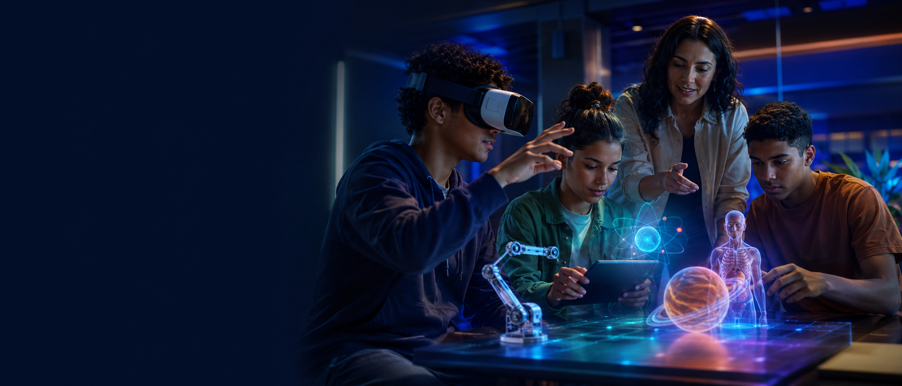

GAME01
Jogos educacionais
Narrativas, desafios e missões que transformam conteúdo em participação ativa.
GamificaçãoDesafiosAprender fazendo

● EDUCAÇÃO + TECNOLOGIA IMERSIVA
Jogos educacionais, realidade aumentada, realidade virtual, cenas exploratórias e simuladores criados para transformar curiosidade em aprendizagem.
DO CONTEÚDO À VIVÊNCIAProjetos pensados para engajar, investigar e praticar.
DESCUBRA ↓NOSSO UNIVERSO DE EXPERIÊNCIAS
Cada projeto começa pelo objetivo educacional. A tecnologia entra para dar corpo ao conhecimento e criar uma experiência que faça sentido para quem aprende.
Narrativas, desafios e missões que transformam conteúdo em participação ativa.
Objetos e informações digitais ganham escala e contexto no ambiente real.
Ambientes imersivos para investigar lugares, fenômenos e situações com segurança.
Ambientes interativos guiados por pontos de interesse, histórias, missões e descobertas.
Prática virtual para testar decisões, processos e habilidades antes do mundo real.
PROJETOS EM MOVIMENTO
Pequenas demonstrações mostram como nossos projetos transformam conteúdos em experiências visuais, interativas e memoráveis.
Cartas físicas ativam modelos 3D dos planetas e transformam o conteúdo de astronomia em uma experiência de exploração.
Componentes ganham escala, nome e função para orientar a montagem de um computador de forma visual e passo a passo.
Cenários digitais permitem testar decisões e fenômenos com segurança, repetição e feedback imediato.
A experiência nasce do objetivo educacional, não apenas da tecnologia.
Escolhemos o formato adequado ao público, ao espaço e aos dispositivos disponíveis.
Narrativa, visual e interação construídos para a realidade de cada parceiro.
CENAS EXPLORATÓRIAS
O estudante percorre um ambiente, encontra pontos de interesse, reúne pistas e constrói respostas. A experiência deixa de ser linear e passa a ser investigativa.
CRIAR UMA CENA ↗SOLUÇÕES SOB MEDIDA
Desenhamos a linguagem, a jornada e as interações para o público, o espaço e o resultado que cada projeto precisa alcançar.
Experiências alinhadas ao objetivo pedagógico, com linguagem adequada à turma e aplicação simples em sala.
CONVERSAR SOBRE O PROJETO ↗Camadas digitais que ampliam exposições, territórios e acervos com novas formas de explorar histórias.
CONVERSAR SOBRE O PROJETO ↗Simulações e jornadas imersivas para apresentar processos, desenvolver habilidades e reduzir riscos.
CONVERSAR SOBRE O PROJETO ↗COMO CRIAMOS
Um processo colaborativo, com decisões pedagógicas e tecnológicas caminhando juntas.
Entendemos público, contexto, conteúdo e o que precisa mudar depois da experiência.
Transformamos objetivos em uma jornada clara, testando a interação antes da produção completa.
Unimos design, desenvolvimento, 3D, áudio e narrativa na tecnologia mais adequada.
Ajustamos a experiência a partir do uso real e preparamos novos caminhos para o projeto.
EXPLORE POR ÁREA
Estas são algumas das frentes que podemos transformar em jogos, ambientes virtuais, objetos aumentados, cenas de exploração e simuladores.
Células, corpo humano, ecossistemas, química e fenômenos físicos.
Computação, robótica, circuitos, montagem e pensamento digital.
Territórios, personagens, patrimônios e viagens por outros tempos.
Geometria espacial, medidas, gráficos e resolução visual de problemas.
Biomas, sustentabilidade, prevenção e relações entre sociedade e natureza.
Processos, segurança, operação de equipamentos e formação profissional.
Não encontrou o seu tema? Nossa proposta é criar experiências personalizadas para diferentes áreas do conhecimento.
APRESENTAR MEU TEMA ↗COMPARE OS FORMATOS
Não existe uma tecnologia melhor para tudo. Existe a combinação certa para o conteúdo, o público e o resultado esperado.
| RECURSO | ARRealidade aumentada | VRRealidade virtual | CENASAmbientes exploratórios | GAMEJogo educacional | SIMSimulador |
|---|---|---|---|---|---|
| Funciona em celular ou tablet | ✓ | — | ✓ | ✓ | ✓ |
| Imersão completa com headset | — | ✓ | ✓ | — | — |
| Interação com objetos 3D | ✓ | ✓ | ✓ | ✓ | ✓ |
| Decisões e feedback ao estudante | ✓ | ✓ | ✓ | ✓ | ✓ |
| Exploração livre do ambiente | — | ✓ | ✓ | ✓ | — |
| Treinamento de procedimentos | — | ✓ | — | ✓ | ✓ |
A combinação final depende do escopo de cada projeto. Podemos integrar mais de um formato na mesma jornada.
SOBRE NÓS
A IMERSABER XR é um estúdio de experiências educacionais imersivas. Reunimos educação, narrativa, design e desenvolvimento para tirar o conhecimento do plano abstrato e colocá-lo em ação.
NOTÍCIAS & IDEIAS
Conteúdos que estamos preparando para ajudar educadores e organizações a pensar experiências imersivas com propósito.
Um mapa simples para escolher a tecnologia a partir do objetivo — e não do efeito visual.
CONTEÚDO EM PREPARAÇÃODa pesquisa do conteúdo à narrativa espacial, veja as camadas que tornam uma experiência significativa.
CONTEÚDO EM PREPARAÇÃOPor que boas mecânicas podem transformar o estudante em protagonista do conhecimento.
CONTEÚDO EM PREPARAÇÃOINICIAR UMA CONVERSA
Conte a ideia, o público e o desafio. Nós ajudamos a descobrir qual combinação de jogo, AR, VR, cena exploratória ou simulação faz mais sentido.
Preencha os campos. Leva menos de dois minutos.